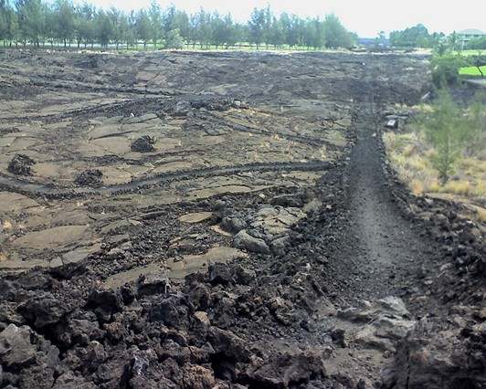
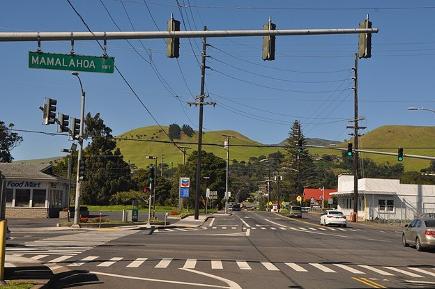

Māmalahoa Highway

Bill Ward / CC BY 2.0 (Wikimedia Commons)
Māmalahoa Highway is one of the oldest continuously used routes in Hawaiʻi, and its name predates asphalt, automobiles, and the idea of a “highway” itself. Long before it became a numbered road wrapping around Hawaiʻi Island, Māmalahoa was a footpath and trail system connecting districts, communities, and resources.
The name Māmalahoa is tied to Ke Kānāwai Māmalahoe – "The Law of the Splintered Paddle,” proclaimed by King Kamehameha I. The law was named quite literally as Kamehameha I during a shoreline raid in Puna, got his foot caught in a crevice and was struck in the head by an unarmed fisherman, splintering a koa paddle. His steersman was also killed in the raid that went awry.
Kamehameha later interpreted this event as a lesson: The strong must not mistreat the weak, his people must be assured protection from harm's way in their pursuits and that safe passage must be everyone's entitlement. About a decade later, King Kamehameha I, proclaimed Ke Kānāwai Māmalahoe – "The Law of the Splintered Paddle" – at Kahaleʻioleʻole in the Kaipalaoa area of Hilo.
The law established a principle of shared responsibility and restraint, one that recognized the vulnerability of everyday people moving through the landscape. In time, Māmalahoa became associated not just with a path, but with the idea that travel itself carried obligations.
As the island changed, so did the route. Footpaths widened. Horses and carts followed. Later, paved roads replaced trails, and the name Māmalahoa was applied to long stretches of roadway circling the island. In many places, the modern highway does not follow the exact ancient alignment, but the name endured, bridging old movement patterns with new infrastructure.
Today, Māmalahoa Highway can feel like many different roads depending on where you are. In some areas it passes through towns and neighborhoods; in others it cuts across open land, lava fields, or forest. For residents, it is part of daily life. For visitors, it often appears as a practical label on a map, detached from its deeper meaning, ensuring safe travel for all.
What makes Māmalahoa unusual is that its name carries both physical and moral weight. It refers to a route, but also to a law that still holds legal standing in Hawaiʻi today, enshrined in the state constitution. Few roads anywhere are tied so directly to an ethical principle.
The road continues to change. Alignments shift, traffic increases, and development presses closer in some areas than others. But the name remains, quietly linking modern travel to an ancient rule about care, restraint, and shared space.

Māmalahoa is not just a highway. It is a reminder that even something as ordinary as a road can carry history, law, and values beneath its surface.